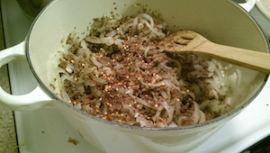
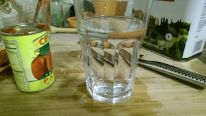
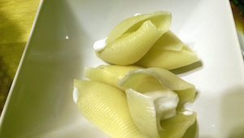

肉なしミートソース
6人前?
材料
- 玉ねぎ 大2つ、もしくは小3つ
- ニンニク 3かけ (包丁の背で潰してぶつ切りにしたもの)
- ホールトマト缶 800g (Cento San Marzano Peeled Tomatoes) 1缶
- トマトペースト缶 170g (Cento Tomato Paste 6oz) 1缶
- 肉もどき 1パック (Lightlife Smart Ground Original)
- バルサミコ酢 大さじ2
- 水 1カップ
- オリーブオイル 1/4カップ
- 唐辛子フレーク適量
- 塩2つまみ
- (好みのパスタ)
- (ギリシャヨーグルト 1カップ)
- (パルメザンチーズ)
手順
- パスタのための水を沸かしはじめる (分量外)。
- 玉ねぎは半分に切ってから、薄い半月切りにする。

- 大きめのホーロー鍋などを熱し、オリーブオイルで玉ねぎを透明になるまで炒める。約4分。
- ぶつ切りにしたニンニクとばらした肉もどきを鍋に入れてよく混ぜる。
- バルサミコ酢、塩、唐辛子フレークを入れて約一分炒める。
 - ボールにホールトマト缶を開けて、一口サイズになるように手でちぎる。
- ちぎったトマトとその汁、トマトペーストを鍋に入れてよく混ぜる。


- 鍋に水を加えてよく混ぜる。

- よく混ぜながら中火で 7分間煮込む。
- 多めの沸騰したお湯に粗塩一握りを加えて、手順通りパスタを調理する。
コンキリオーニ (stuffed shell) を作ったので、中にギリシャ・ヨーグルト小さじ1を詰めて、ソースは上からかけた。

Next Page
❧
空芯菜の炒めもの